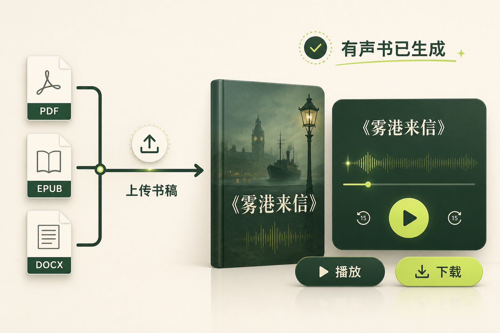
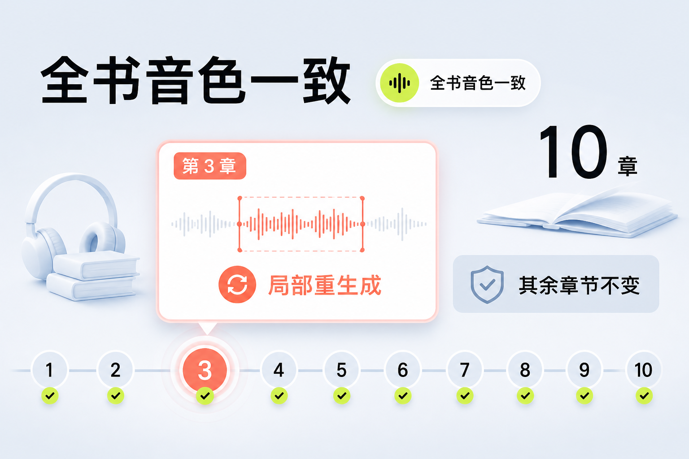
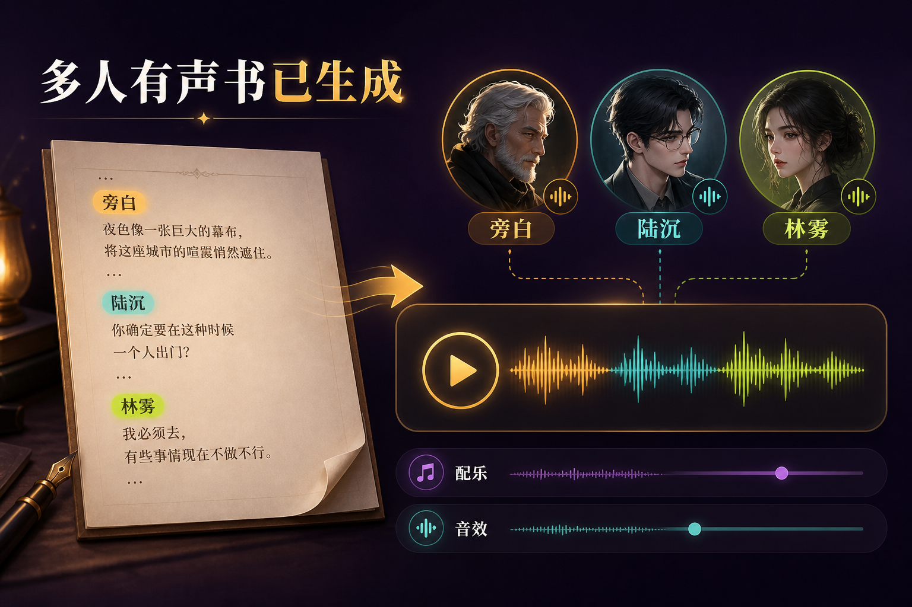
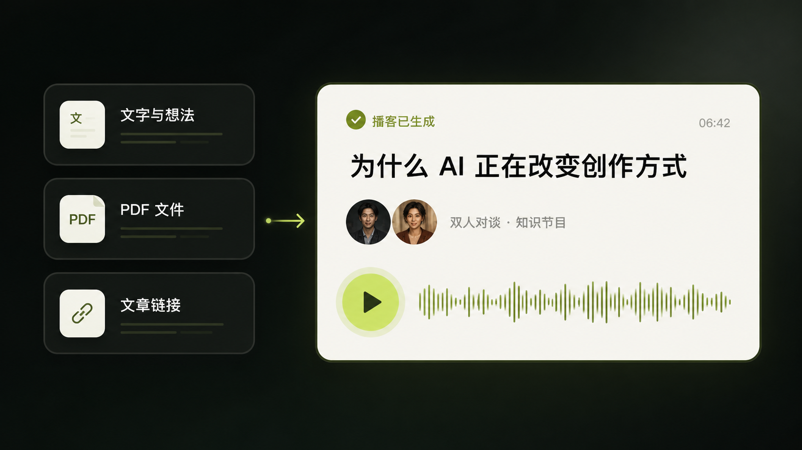
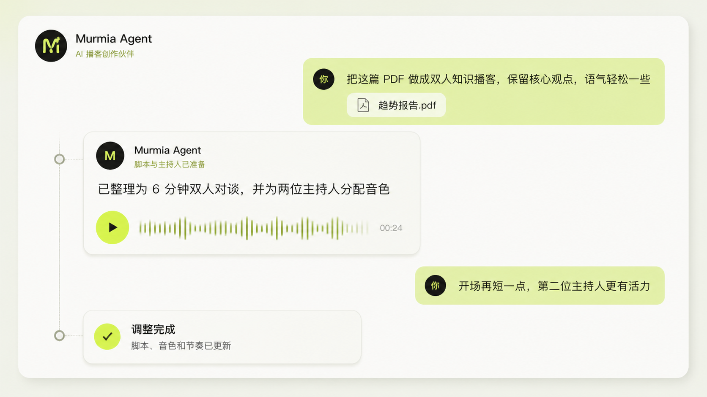
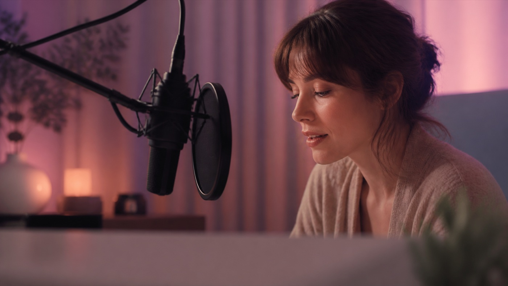
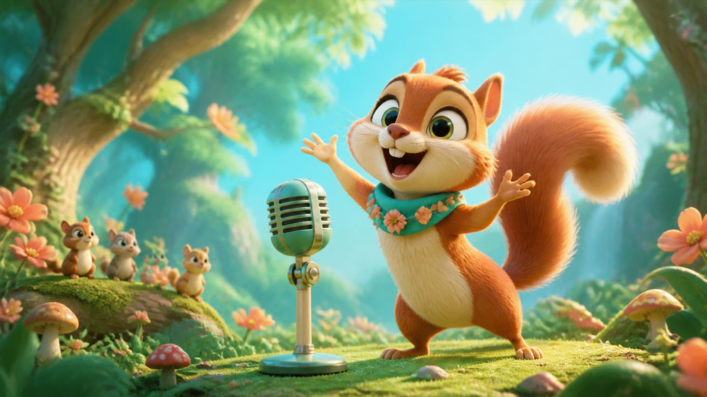
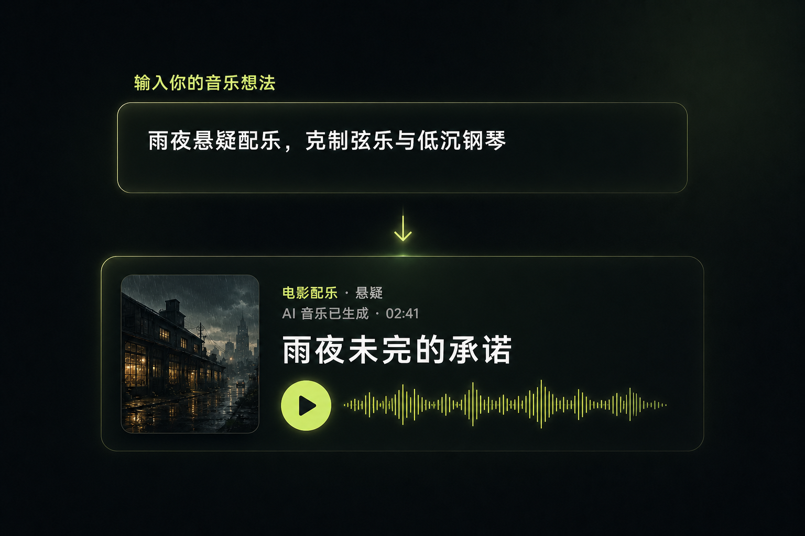

免费在线 AI 语音生成器
一站式 AI 音频编辑站
在线生成 自然语音配音音乐音效，也能用一句话完成 播客有声书广播剧
补充创作要求
0/10000
试试这些
试试这些
语音已生成 · Arabella · 00:08
生成语音 01
下载





像聊天一样制作播客
和 Agent 对话，持续创建和调整播客
不用反复修改复杂参数。直接告诉 Agent 你想改什么，它会调整脚本、主持人、语气、节奏、音乐和音效
重写开场更换主持人调整节目节奏加入音乐音效
用 Agent 创作 →
一个工作站，覆盖每一种音频题材

亲密音频近距离表演与空间声
动画角色声音与情绪表演强大的 AI 语音生成能力
自然、有情绪，还能精细控制，控制情绪、停顿、气息和角色质感 ElevenLabs
ElevenLabsArabella
有声书亲密音频
Ronin
广告纪录片
Maya
播客社交视频
Theo
广播剧游戏角色
输入15 秒原始录音
输出专属音色已创建
声纹与说话特征已匹配100%
描述你想要的声音
一位沉稳、克制的中年男性，英式口音，适合悬疑有声书
生成音色 →新音色已生成Rowan沉稳 · 英式口音
原始声音你的表演
目标声音未来感机器人声
转换后的语音未来感机器人声

音效生成与音效库
更多音频工具
完成多语言视频配音，或把成品音频拆成可以继续编辑的独立音轨用户声音
★★★★★完整作品创作 我只要把这期节目的主题说清楚，就能先听到一版完整成品，之后再改细节，不用从空白时间线开始
★★★★★长篇一致性 长篇旁白最怕人物前后不一致。做完几个章节后，音色和情绪还能接得上，返工少了很多
★★★★★一站式音频供应 对白、环境声和配乐能在同一个项目里处理，做广播剧时不用一直在几个工具之间来回导文件
★★★★★多语言配音 同一条视频做英文和日文版本很快，说话节奏也没有完全跑掉，适合经常发布多语言内容的人
★★★★★声音转换 我上传一段表演，再换成角色音色，原来的停顿和情绪还在。试角色声音时特别方便
★★★★★情绪语音 有些句子需要轻声、停顿和气息，不是把文字念对就够了。生成出来的表演感比我预期自然
★★★★★角色音色 角色声音可以先用描述做出方向，再逐个试听。动画前期不用等演员到齐才开始确认角色
★★★★★音效与音乐 临时要补门响、脚步或环境底噪，直接生成或从库里搜索，交付前不用再到处找素材
常见问题
从开始创作到导出成品，你可能关心的都在这里不会混音，也能创作完整作品吗？
可以。像聊天一样描述想法，Murmia 会完成内容编排、语音、音乐、音效和混音，先给你一版可以直接试听的完整作品。需要调整时，也可以继续编辑章节和音轨，不必从空白时间线开始。
可以创作哪些音频题材？
可以创作播客、有声书、广播剧、亲密音频、动画配音和广告等题材。你可以直接说明受众、时长、角色和风格，也可以让 Murmia 根据内容先提出完整的声音方案。
可以从哪些内容开始创作？
既可以输入一句自然语言，也可以上传小说、脚本、PDF 或已有音频。面对长篇内容，Murmia 会先识别结构、章节和角色，再把它整理成可继续编辑的作品项目。
生成后还能继续编辑吗？
可以。你可以试听成品，修改文本和角色音色，单独重新生成某一段语音、音乐或音效，也可以查看并调整多章节、多音轨结构。
如何控制声音的情绪、停顿和角色质感？
你可以直接用自然语言描述表演，也可以在脚本中加入耳语、叹气、清嗓、停顿等表演提示。不同模型支持的控制方式有所不同，Murmia 会在工作台展示当前模型可用的参数。
为什么 Murmia 接入多个语音模型？
不同模型擅长的语言、口音、情绪和内容长度不同。你可以按作品需要选择 ElevenLabs、Fish Audio、Seed、MiniMax 等模型，同时把结果保存在同一个项目里比较和继续制作。
音色克隆需要什么样的录音？
一段清晰、稳定、只有一位说话人的录音最容易得到自然结果。尽量避免背景音乐、回声和多人对话；只应克隆你本人的声音，或已经获得声音本人明确授权的声音。
视频配音会自动完成哪些工作？
上传视频后，可以识别原始对白并生成目标语言的配音版本，再选择需要的音色并试听结果。实际支持的语言、字幕和同步能力以工作台当前可选模型为准。
可以生成、搜索和编辑音效吗？
可以。你可以描述想要的环境声、动作声或氛围，也可以从音效库按场景搜索。试听后可直接加入项目，并在时间线上调整位置和音量。
可以导出成品和独立音轨吗？
可以。完成后既能导出用于发布的成品音频，也能导出语音、音乐、音效等独立音轨，方便交付或进入专业工具继续制作。
开始创作你的下一部声音作品
语音、音乐、音效与完整作品，都在一个工作站完成
进入工作台 →